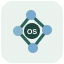

Registros privados
Dados obtidos exclusivamente após autenticação e checagem de autorização no Firestore.
| Título | Categoria | Fonte | Verificação |
|---|
Nenhum registro privado disponível ainda.
O administrador precisa conectar o Firebase e aplicar as regras de segurança. Nenhuma informação privada está disponível neste momento.
Seu e-mail e sua senha são administrados pelo serviço de autenticação, nunca pelo GitHub Pages.
Criar uma conta não concede acesso aos dados. É necessária aprovação do administrador.
Confirme seu endereço pelo e-mail recebido. Depois, o administrador poderá aprovar o acesso.
Somente registros autorizados no banco privado são exibidos.
Revise a instituição e a justificativa antes de autorizar um usuário. Acesso aos relatórios exige aprovação separada.
Mapeamento aproximado, não a localização de vendedores. Use os filtros combinados para explorar os anúncios.
Os marcadores representam localizações aproximadas. Nenhuma coordenada de vendedor é exibida.
Envie links e informações para triagem. Só você e administradores autorizados acessam a submissão. Não insira dados pessoais desnecessários.
Acompanhe o status de cada envio. As notas exibidas aqui são destinadas ao autor.
Avalie os registros recebidos; ações serão comunicadas ao autor.
Casos concluídos ou encerrados, preservados para consulta e acompanhamento.
Publique apenas informações corroboradas. Não inclua nomes ou endereços particulares. Pontos publicados serão visíveis aos usuários autorizados.
Dados obtidos exclusivamente após autenticação e checagem de autorização no Firestore.
| Título | Categoria | Fonte | Verificação |
|---|
Nenhum registro privado disponível ainda.
Relatórios disponíveis exclusivamente conforme autorização individual.
Relatórios de inteligência organizam informações de fontes abertas, registros documentais e evidências verificadas. Fontes são avaliadas, informações cruzadas e graus de incerteza registrados. A presença de uma espécie em anúncios ou publicações não comprova uma transação ou infração. Material sensível recebe controles específicos de acesso e distribuição.
Nenhum relatório foi disponibilizado para sua conta.
Relatórios e análises produzidos pelo Programa de Inteligência para Conservação da WCS Brasil, organizados por tema.
Relatórios de gestão, auditoria e acompanhamento institucional do Observatório.
Nenhum relatório disponível nesta categoria.
Acesso rápido a serviços externos úteis para pesquisa, preservação de páginas, análise de embarcações, pesca, domínios e investigação em fontes abertas.
Os serviços abaixo são externos ao Observatório. Use-os de acordo com suas políticas de uso, a legislação aplicável e a finalidade institucional da investigação.
33 ferramentas disponíveis
Examine posições e trajetórias de aeronaves reportadas por ADS-B; cobertura e históricos podem variar.
Abrir ferramenta ↗Explore informações públicas sobre ASNs, endereços IP e rotas BGP para contextualizar infraestrutura de rede.
Abrir ferramenta ↗Identifique tecnologias usadas por sites e lojas virtuais para comparar infraestrutura de plataformas comerciais.
Abrir ferramenta ↗Consulte registros oficiais de comércio internacional declarado sob a CITES por espécie, país e período. Não é uma base de tráfico ilegal.
Abrir ferramenta ↗Consulte voos e trajetórias disponíveis no mapa; histórico detalhado e cobertura podem depender do plano.
Abrir ferramenta ↗Consulte registros de ocorrência e dados georreferenciados de biodiversidade para contextualizar a distribuição de espécies.
Abrir ferramenta ↗Explore atividade de embarcações, pesca aparente, encontros e presença no mar em mapas interativos.
Abrir ferramenta ↗Use operadores avançados de busca para localizar páginas, documentos, domínios e termos específicos no Google.
Abrir ferramenta ↗Pesquise imagens semelhantes para examinar fotografias de animais e possíveis reutilizações em anúncios.
Abrir ferramenta ↗Verifique se endereços de e-mail sob sua responsabilidade aparecem em vazamentos públicos conhecidos.
Abrir ferramenta ↗Consulte o Global Integrated Shipping Information System da Organização Marítima Internacional.
Abrir ferramenta ↗Explore observações, imagens e identificações colaborativas de espécies; dados devem ser verificados antes do uso investigativo.
Abrir ferramenta ↗Consulte categorias de ameaça, avaliações de conservação e informações sobre distribuição de espécies na Lista Vermelha da IUCN.
Abrir ferramenta ↗Organize conexões entre empresas, sites, domínios e outras entidades em gráficos de vínculos.
Abrir ferramenta ↗Pesquise embarcações, posições, movimentos, portos e informações de tráfego marítimo.
Abrir ferramenta ↗Extensão de navegador para pesquisar indicadores, domínios e outras entidades em múltiplas fontes OSINT.
Abrir ferramenta ↗Ferramenta instalável para inspeção autorizada de redes e serviços; não é uma busca passiva por padrão.
Abrir ferramenta ↗Consulte registros públicos de empresas para contextualizar importadores, exportadores e estabelecimentos comerciais.
Abrir ferramenta ↗
Navegue por um diretório estruturado de recursos e técnicas de investigação em fontes abertas.
Abrir ferramenta ↗Painel global de fontes abertas com camadas de voos, embarcações, satélites e câmeras; confira a origem e a atualização dos dados.
Abrir ferramenta ↗Encontre emissoras de rádio de diferentes regiões e acompanhe relatos e notícias locais em áudio.
Abrir ferramenta ↗Extensão que contextualiza URLs, domínios, IPs e indicadores de risco; recursos variam conforme a licença.
Abrir ferramenta ↗Consulte informações de vulnerabilidades e CVEs para avaliar riscos de infraestrutura e plataformas digitais.
Abrir ferramenta ↗Consulte registros e histórico DNS, IPs e domínios por API; exige chave e pode ter limites comerciais.
Abrir ferramenta ↗Pesquise informações já indexadas sobre dispositivos e serviços conectados à internet; use apenas para fins autorizados.
Abrir ferramenta ↗Verifique enquadramento CITES e CMS, taxonomia, distribuição e informações regulatórias de espécies.
Abrir ferramenta ↗Software de correlação automatizada de fontes OSINT sobre domínios e infraestrutura; código disponível no GitHub.
Abrir ferramenta ↗Software para coletar informações públicas sobre domínios, subdomínios e infraestrutura digital; requer instalação.
Abrir ferramenta ↗Localize cópias de fotografias em diferentes sites para avaliar a reutilização de imagens em anúncios.
Abrir ferramenta ↗Analise arquivos e possíveis ameaças digitais em ambiente controlado; não envie dados investigativos sensíveis.
Abrir ferramenta ↗Consulte versões arquivadas de páginas e acompanhe mudanças históricas em sites.
Abrir ferramenta ↗Investigue registros de domínio e informações técnicas associadas à infraestrutura de sites.
Abrir ferramenta ↗Localize câmeras públicas de cidades, portos e aeroportos para obter contexto visual de localidades.
Abrir ferramenta ↗Nenhuma ferramenta encontrada para os filtros selecionados.